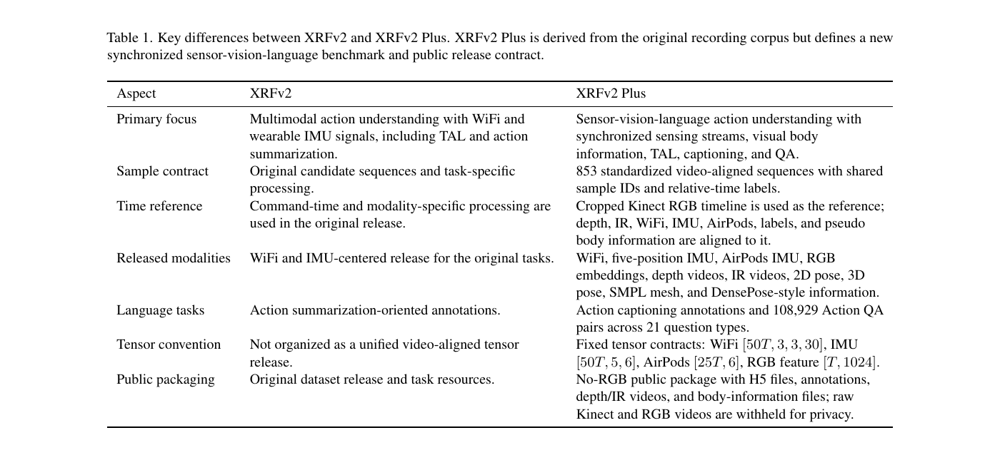
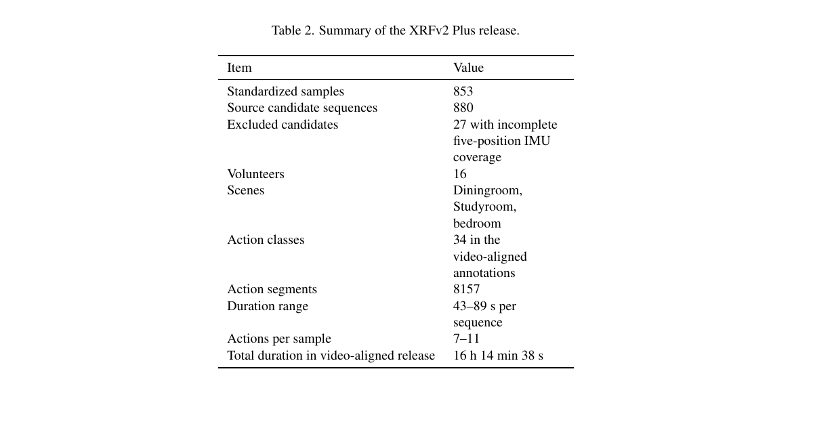
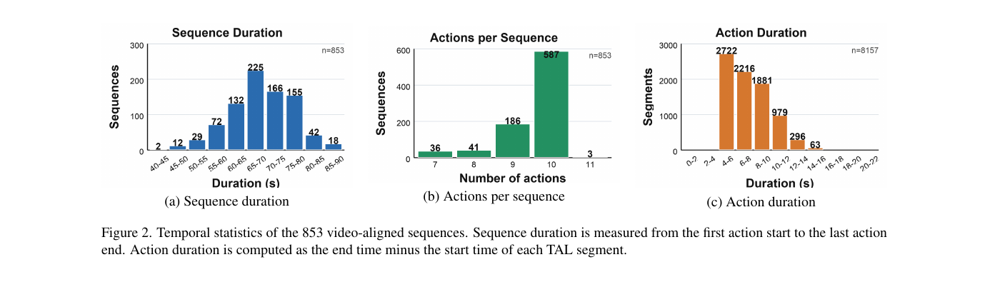
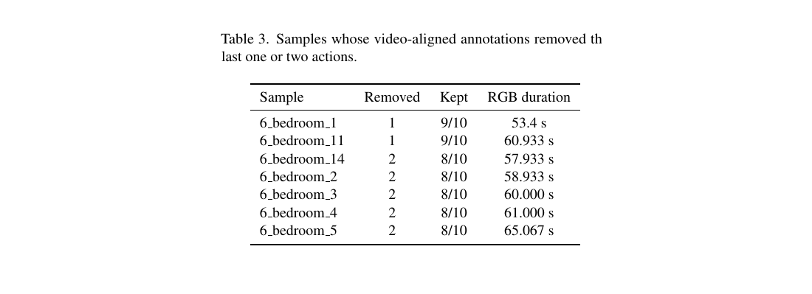
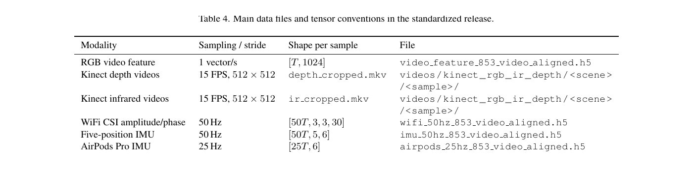
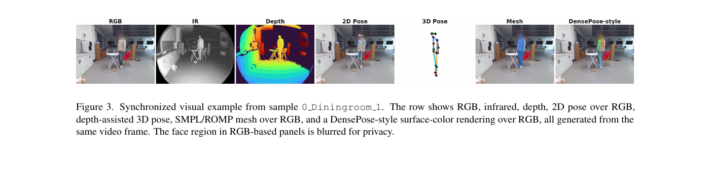
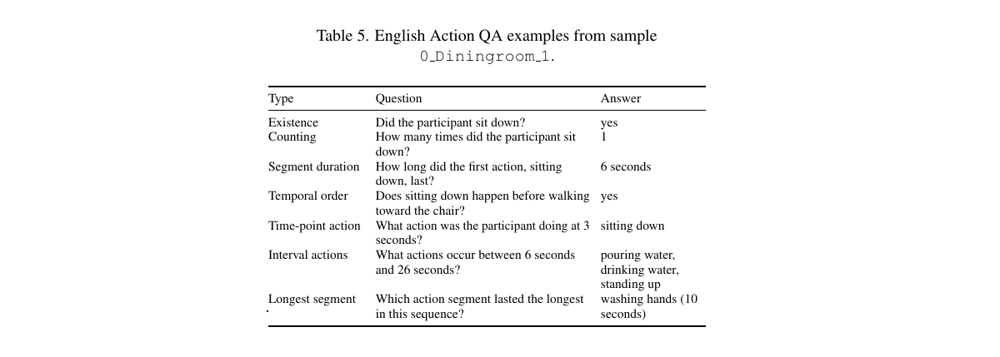
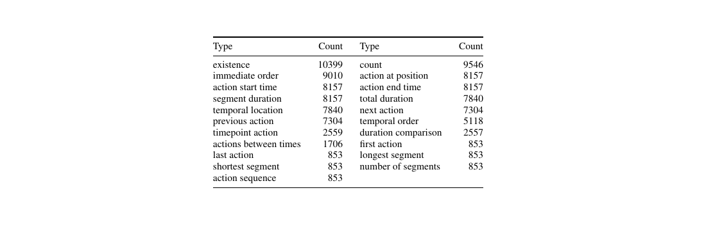

853 valid sequences
Dataset Update
XRFv2 Plus: A Multimodal Sensor-Vision-Language Dataset for Action Understanding
Fei Wang
XRFv2 Plus is a video-aligned update built from the original XRF V2 recording corpus. It synchronizes sensing streams, body information, temporal labels, captions, and action QA around 853 valid action sequences.
16 h 14 min 38 s
8,157 segments and 108,929 QA pairs
Overview
XRFv2 Plus is a synchronized multimodal dataset update for sensor-vision-language action understanding. It is built from the original XRF V2 recording corpus, but reorganizes the release around a common cropped-video timeline so that sensing streams, body representations, temporal labels, captions, and action QA share the same sequence IDs and relative-time axis.
The public update was released on June 6, 2026. The README reports that the Kaggle release was verified through version 4 on June 5, 2026, 23:39 CST.
What Is New
| Category | Release content |
|---|---|
| Sensing streams | WiFi CSI, five-position IMU, AirPods IMU, RGB video embeddings, Kinect depth videos, Kinect infrared videos |
| Body information | Human 2D pose, depth-assisted 3D pose, SMPL mesh, DensePose-style surface information |
| Action labels | Temporal action localization, action captioning, action question answering |
| Time convention | All labels and synchronized tensors use relative time within each sequence |

Release Summary
| Standardized samples | 853 |
|---|---|
| Original candidates | 880 |
| Excluded candidates | 27 with incomplete five-position IMU coverage |
| Volunteers | 16 |
| Scenes | Diningroom, Studyroom, bedroom |
| Action classes | 34 |
| Action segments | 8,157 |
| Sequence duration range | 43-89 seconds |
| Actions per sequence | 7-11 |
| Total video-aligned duration | 16 h 14 min 38 s |



Modalities
For a sequence of duration T seconds, the release provides synchronized tensors and files including WiFi CSI amplitude/phase at 50 Hz, five-position IMU at 50 Hz, AirPods Pro IMU at 25 Hz, one 1024-D RGB video feature per second, COCO-17 2D pose, depth-camera 3D pose, compact ROMP/SMPL mesh parameters, DensePose-style IUV information, and cropped Kinect depth/infrared videos at 15 FPS and 512 x 512 resolution.
The five-position IMU order is fixed as left wrist, right wrist, phone case in the left pants pocket, phone case in the right pants pocket, and glasses temple.


Annotation Tasks
XRFv2 Plus includes ActivityNet-style temporal action localization labels, Chinese-only, English-only, and bilingual caption files, and action QA files. The QA release contains 108,929 QA pairs across 21 question types, including existence, counting, segment duration, temporal order, and time-point action questions.


Release Batches
The README lists four public Kaggle versions: version 1 for the fast no-video release, version 2 for 853 cropped Kinect depth videos, version 3 for 853 cropped Kinect infrared videos, and version 4 for the DensePose H5 file. Raw Kinect recordings and cropped RGB videos are not included in the Kaggle release for privacy reasons.
Resources
Citation
@misc{wang2026xrfv2plus,
author = {Wang, Fei},
title = {XRFv2 Plus: A Multimodal Sensor-Vision-Language Dataset for Action Understanding},
year = {2026},
publisher = {Zenodo},
doi = {10.5281/zenodo.20564312},
url = {https://doi.org/10.5281/zenodo.20564312}
}